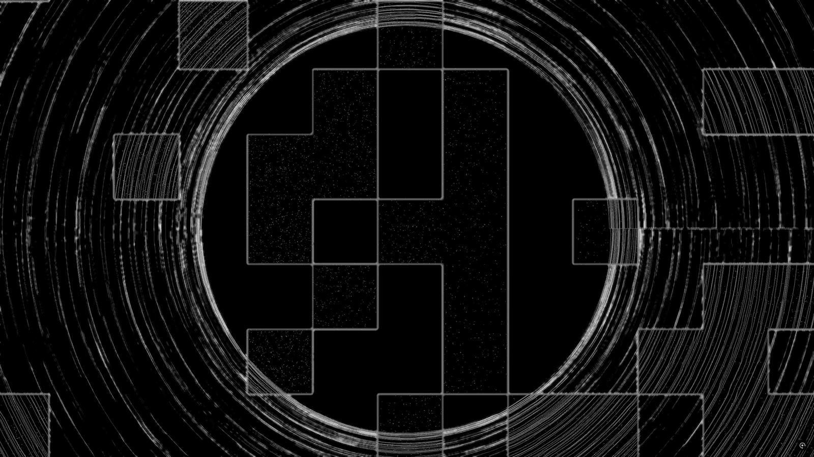

Binary 弥码
Composed by Danni Zhao. Visual design by Maowen Tang.
Watch on YouTubeAbout the work
"Binary" is a minimalist noise experimental electronic music piece. Its sound is generated using the AI-driven modular open-source synthesizer BespokeSynth and VCV Rack, combining noise oscillators, filtering, waveform shaping, and VST hosting to construct a layered spectrum. Subtle variations in rhythm and timbre are controlled by a Python script driven by the stroke counts of text segments from Isaac Asimov’s short story I, Robot, specifically the “Three Laws of Robotics,” mapping these values to rhythm density and trigger probability. This allows the sound to navigate between structure and chance, while further edited and reorganized in the host, creating randomness shaped by both cultural semantics and algorithmic logic.
The visual component is generated in real time using Max/MSP Jitter, with alternating circular flashes and black-and-white modules, and noise particles modulated by the sound spectrum. The work explores the possibility of “algorithm as sensibility”: technology is not merely a tool but the very foundation of sound and image generation, and chance becomes an intrinsic aesthetic of the system—unpredictable yet always constrained, like improvisation carved by computational logic.
“弥码”是一首极简噪音实验电子音乐，声音生成以AI模块化开源合成器 BespokeSynth 与 VCV Rack 为核心，通过噪音振荡器、滤波、波形塑形及 VST 托管等技术构建层次化频谱。其中节奏与音色的微变由 Python 脚本驱动短篇科幻小说《我，机器人》中“机器人三定律”文字段落笔画数控制，映射为节奏密度和触发概率，使声音在规则与偶然偏差间游走，并在宿主中二次编辑与重组，形成文化语义与算法逻辑共同塑造的随机性。
视觉部分使用 Max/MSP Jitter 实时生成，环形闪烁与黑白模块交替为核心符号，噪点颗粒随声音频谱变形。作品探索“算法即感性”的可能性：技术不仅是工具，更是声音与图像生成的本体，而偶然性成为系统的内在美学——不可预测却始终受约束，如同被计算机逻辑雕刻出的即兴。
Visualization
